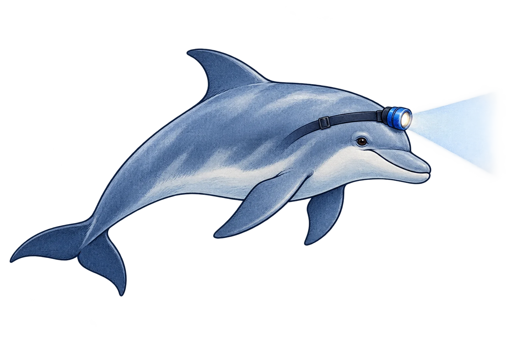
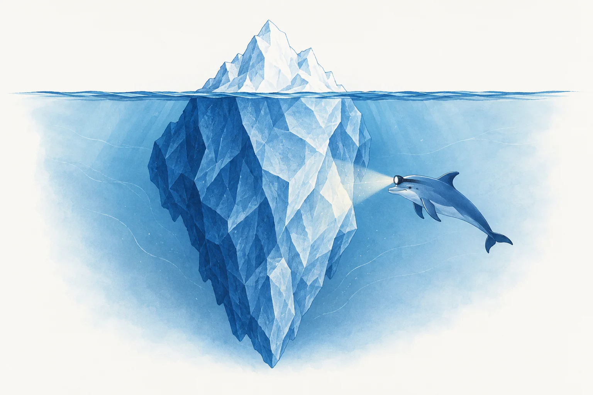

01 / Scout
The research companion
A welcoming illustration for Learn, onboarding and the end of a report. Best at medium size; not a replacement for the sonar logo.
Dolphin detectives · illustration set
Five dolphins with headlamps, each lighting a different part of an iceberg under the water.
Original editorial illustrations for RWA Sonar. They decorate the research pages; evidence and review status stay in the text.
Explore their places in the product ↓
A wider view
Four detectives, with smaller figures farther away. The wider frame shows more of the iceberg. It sits at the top of the methodology page.
See it in the methodology →
The original companion set
Blue ink, pale washes and a headlamp. These three set the style for the later team scenes.

A welcoming illustration for Learn, onboarding and the end of a report. Best at medium size; not a replacement for the sonar logo.

The first iceberg study, retained here as the style reference for the new daylight and night-watch scenes.

A quiet companion in the change-journal introduction. The text says what was checked, when, and what failed.
In the product
The illustrations introduce a page. Current findings, observation times and review status stay in their own panels. The pitch is six slides.
Usage rules